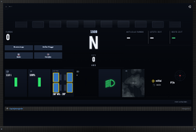

OmegaSim Wiki – die Idee dazu stammt von Gnen54. Hier stehen die offenen Artikel von Nutzer Luuke42 unter der Lizenz CC BY-SA 4.0.
Boxenstopp
Stand dieses Artikels: OmegaSim 1.2.9 vom 26.10.2026 · Firmware des Autos: nicht bekannt (OmegaSim liest die Firmware-Version nicht aus)
Dieser Text wurde mithilfe von KI erstellt (Claude) und ist nicht in jedem Punkt von Menschen geprüft. Fehler bitte direkt verbessern oder auf der Diskussionsseite melden, siehe Mitmachen. Die öffentliche Fassung auf luuke42.github.io/omegasim kann älter sein als der hier beschriebene Stand.


Der Boxenstopp ist die Funktion von OmegaSim, mit der ein Fahrzeug während einer Sitzung getankt, mit neuen Reifen versehen und repariert wird. Er setzt die simulierten Zustände aus dem Artikel Verschleiß zurück und kostet dafür Standzeit. Eine echte Boxengasse braucht es nicht: In der Vorgabe wird ein angeforderter Stopp dadurch bedient, dass das Auto an beliebiger Stelle anhält. Technisch ist der Boxenstopp eine Zustandsmaschine mit drei Zuständen (aus, Anfahrt mit Tempolimit, Service), die im 45-ms-Takt der Steuerung läuft. Ab Werk ist das Boxen-Minigame eingestellt, bei dem Tastendrücke den Stopp verkürzen. Auch NPCs können an die Box fahren; sie parken dafür mit derselben aufgenommenen Einparkfolge wie das Safety Car.
Auf einen Blick
| Merkmal | Wert |
|---|---|
| Menüpfade | Optionen → Allgemein → Tank & Schaden (Boxengasse, Modus); Optionen → Renneinstellungen (Pflichtstopps, Strafe, Weich-Verbot); Optionen → NPCs (NPC-Boxenstopp); Optionen → Ton (Signaltöne) |
| Anfordern | Knopf Boxenstopp im Cockpit oder Boxentaste des Controllers |
| Boxenmodus | Minigame (Vorgabe, experimentell) oder Standard |
| Boxengasse | Überall halten (Vorgabe), Neben der Strecke, Doppelter Start-Ausdruck (experimentell) |
| Tempolimit | 80 km/h auf dem Tacho, 60 km/h beim doppelten Ausdruck |
| Reifenwechsel | im Mittel 4,0 s (Streuung 0,2 s), erst hinten, dann vorn |
| Tanken | 22 % je Sekunde (24,2 l/s) |
| Minigame | 5 Tasten, je richtige Taste 8 % der Grunddauer weniger |
| Pflichtstopp zählt | ab 3 s Standzeit im Rennen |
| NPC-Boxenstopp | experimentell, ab Werk aus, 5 s, alle 5 bis 9 Runden |
| Status | Grundablauf stabil; Minigame und doppelter Ausdruck experimentell; NPC-Box WIP; Weich-Verbot WIP |
| Quelldateien | src/70-race.js, src/90-ghosts.js, src/71-rammen.js, src/50-drive.js, audio/CREDITS.md
|
Grundlagen
Zustandsmaschine
Eine Zustandsmaschine (auch Automat) ist eine Beschreibung eines Ablaufs als feste Liste von Zuständen und Regeln, wann man von einem in den nächsten wechselt. Ein Beispiel aus dem Alltag ist eine Ampel: rot → rot-gelb → grün → gelb → rot. Jeder Wechsel hat eine Bedingung, zum Beispiel „Zeit abgelaufen“. Der Vorteil: Der Ablauf ist eindeutig, und das Programm muss sich nur den aktuellen Zustand merken. Beim Boxenstopp heißt der Zustand pitState und hat die Werte off (aus), limited (angefordert, Tempolimit aktiv) und servicing (Service läuft).
Takt und Ereignis
Manche Wechsel geschehen durch ein Ereignis (ein Tastendruck, das Überfahren eines Musters), andere werden in jedem Takt geprüft (steht das Auto schon?). pitLaneTick() läuft im Steuertakt von 45 ms und rechnet Tanken, Reparatur und Reifenwechsel mit der verstrichenen Zeit dt weiter.
Plan und Arbeit
Ein Boxenstopp hat einen Plan: drei Aufgaben (Tanken, Reifen, Reparatur), jede an oder aus, das Tanken mit einer Zielmenge. Jede Aufgabe ist fertig, wenn ihr Ziel erreicht ist. Der Stopp ist fertig, wenn alle geplanten Aufgaben fertig sind. Laufen mehrere Aufgaben gleichzeitig, bestimmt die längste die Dauer.
Normalverteilung
Die Dauer des Reifenwechsels ist nicht fest, sondern wird je Stopp gezogen: aus einer Normalverteilung (Glockenkurve) mit Mittelwert 4,0 s und Standardabweichung 0,2 s. Rund zwei Drittel aller Wechsel liegen zwischen 3,8 und 4,2 s. Der Code erzeugt den Wert mit dem Box-Muller-Verfahren aus zwei Zufallszahlen: 4,0 + 0,2 · √(−2·ln u) · cos(2π·v).
Bedienung
Stopp mit dem eigenen Auto
- Während der Fahrt den Knopf Boxenstopp im Cockpit oder die Boxentaste am Controller drücken. Die Boxengasse ist jetzt aktiv, das Tempolimit von 80 km/h (Tacho) gilt.
- Während der Anfahrt planen: L1/LB schaltet die Reifenmischung durch (weich, mittel, hart, Regen; Vorgabe die montierte), R1/RB die Tankmenge (nein, 55 l, voll). Der Boxenschirm im Cockpit zeigt die Aufgaben und lässt sich mit dem Steuerkreuz bedienen.
- Anhalten. Unter 10 km/h und ohne Pedal beginnt der Service (bei „Neben der Strecke“ erst, wenn das Auto neben der Bahn steht).
- Im Minigame erscheinen nacheinander fünf Tasten, Quadrat oder Kreis (Tastatur: K und I). Die richtige drücken. Darunter stehen die aktuelle und die drei nächsten Tasten.
- Nach „Fertig, losfahren!“ losfahren. Im Standardmodus beendet Losfahren den Stopp jederzeit; im Minigame geht es erst, wenn alles fertig ist.
- Abbrechen: ein weiterer Druck auf den Boxenknopf (nicht, solange die Räder ab sind), im Minigame Tippen auf das Kreuz.
NPC-Boxenstopp einschalten
- Optionen → NPCs → NPC: Boxenstopp einschalten (ab Werk aus).
- Länge, frühesten und spätesten Stopp in Runden einstellen.
- Mit „NPC: Boxenstopp im freien Fahren“ (ab Werk an) gilt es auch außerhalb von Rennen.
Einstellungen
| Name in der App | Bereich | Standard | Wirkung (aus dem Code) | Interne ID → Variable |
|---|---|---|---|---|
| Boxengasse aktiv | an/aus | an | aus: kein Tempolimit, kein Service, ein laufender Stopp wird beendet | pit-enable → pitLaneEnabled
|
| Wo ist die Boxengasse? | Überall halten, Neben der Strecke, Doppelter Start-Ausdruck | Überall halten | bestimmt Auslöser und Ort des Service | pit-trigger → pitTrigger
|
| Boxenstopp-Modus (experimentell) | Standard, Minigame | Minigame | siehe Minigame | pit-modus → pitModus
|
| Boxeneinfahrt zählt | 1 Runde, 0 Runden | 1 Runde | nur beim doppelten Ausdruck: ob die erste Überfahrt eine Runde bleibt | pit-double-laps → pitDoubleRunden
|
| Zeitfenster des Doppel-Ausdrucks | 3 bis 10 s | 3 s | so lange nach dem ersten Kontakt zählt ein zweiter als Einfahrt | setting-pit-double-window → PIT_DOUBLE_WINDOW_MS
|
| Vollständige Reparatur dauert (s) | 2 bis 30 | 4 | Gesamtzeit 100 % → 0 % Schaden, nicht linear | setting-repair-time → pitFullRepairS
|
| Tankverbrauch, Crash-Regler | siehe Verschleiß | ohne Tanksimulation wird nicht getankt, ohne Reifenmodell nicht gewechselt, ohne Crash-Erkennung nicht repariert | ||
| Pflichtboxenstopps, Renneinstellungen | keine, 1, 2, 3 | keine | Zahl der vorgeschriebenen Stopps | race-pit-required → racePitRequired
|
| Strafe je verpasstem Stopp (s) | 0 bis 300 | 10 | Zeitstrafe am Rennende | race-pit-penalty → racePitPenaltyS
|
| Strafe für Rammer (experimentell) | aus, nach 1 bis 5 Rammstößen | nach 2 | Rammer steht beim nächsten Stopp zusätzlich | race-ramm-ab
|
| Länge der Rammstrafe | 3, 5, 10, 15, 20 s | 5 s | zusätzliche Standzeit | race-ramm-strafe
|
| Weiche Reifen verboten (WIP) | an/aus | aus | weich ist nicht wählbar; beim Start wird mittel montiert | race-weich-verboten
|
| Alte Boxen-Signaltöne, Optionen → Ton | an/aus | aus | elektronische statt mechanischer Signale | setting-pit-alt-toene
|
| NPC: Boxenstopp (experimentell) | an/aus | aus | NPCs fahren an die Box | ghost-pit → ghostCfg.pitAn
|
| NPC: Boxenstopp im freien Fahren | an/aus | an | auch außerhalb eines Rennens | ghost-pit-free → ghostCfg.pitFrei
|
| NPC: Boxenstopp-Länge (experimentell) | 3 bis 10 s | 5 s | Standzeit eines NPC | ghost-pit-sec → ghostCfg.pitSek
|
| NPC: Boxenstopp frühestens nach | 2 bis 20 Runden | 5 | untere Grenze des Bandes | ghost-pit-min → ghostCfg.pitRundenMin
|
| NPC: Boxenstopp spätestens nach | 2 bis 20 Runden | 9 | obere Grenze des Bandes | ghost-pit-max → ghostCfg.pitRundenMax
|
| Vibration: Boxenstopp, Optionen → Vibration | an/aus | an | Brummen, solange gearbeitet wird | vib-box
|
Funktionsweise
Zustandsmaschine des eigenen Autos
setPitState() und pitLaneTick() in src/70-race.js:
| Zustand | Bedingung | nächster Zustand | was passiert |
|---|---|---|---|
off |
Boxenknopf (nicht bei doppeltem Ausdruck, nicht im Derby) | limited |
Plan wird aus der Vorwahl gebaut, Tempolimit an |
off |
zweiter Start-Kontakt im Zeitfenster (doppelter Ausdruck) | limited |
60 km/h für 4 s, Ansage „Boxenstopp eingeleitet“ |
off |
Boxenmarker-Code überfahren, nicht innerhalb von 2,5 s nach einem Abbruch | limited |
„Boxengasse, Tempolimit“ |
limited |
steht (unter 10 km/h, Pedal unter 10 %) und ist am Ort | servicing |
Reifendauer wird gezogen, Schleifenklänge starten, ggf. Minigame |
limited |
steht, aber nicht neben der Bahn (Modus „Neben der Strecke“) | bleibt | einmal „NEBEN DIE STRECKE FAHREN“ |
limited |
doppelter Ausdruck: 4 s ohne Anhalten | off |
„BOXENGASSE VORBEI“ |
limited oder servicing |
Boxenknopf (nicht während Reifenwechsel) | off |
Abbruch, 2,5 s Sperre gegen sofortiges Wiedereinfahren |
servicing |
Auto rollt wieder (nicht im Minigame vor dem Ende) | off |
Stopp endet, Erledigtes bleibt erledigt |
servicing |
alle Aufgaben fertig und Rammstrafe abgesessen | bleibt (fertig) | „Fertig, losfahren!“, Signalton |
Das Tempolimit setzt speedLimitFactor im Modell. Es gilt immer das strengste von Box, gelber Flagge und Einführungsrunde (applySpeedLimit()). Die Faktoren:
Box: 80 / TACHO_SCALE / 4,0 = 80 / 68,1 / 4 ≈ 0,294 doppelter Ausdruck: 60 / REAL_SCALE / 4,0 = 60 / 73,75 / 4 ≈ 0,203
Liegt das Auto beim Einfahren über dem Limit, bremst der Begrenzer mit 0,35 Modell-km/h je Sekunde herunter (pitLimiterDecel), statt auf das Limit zu springen.
Der Plan
makePitPlan() baut ihn beim Anfordern:
Tanken = 100 %, wenn Tanksimulation an und Tank < 99,5 %, sonst 0 Reifen = an, wenn Reifenmodell an Reparatur = an, wenn Schaden > 0,5 %
Was im Boxenschirm vorgewählt wurde (pitVorwahl), ersetzt den jeweiligen Wert. Tankstufen sind 0, 50 und 100 % (TANK_STUFEN; 50 % = 55 l). Abtanken gibt es nicht: steht der Tank schon über dem Ziel, ist das Tanken erledigt. Angeboten wird nur, was simuliert wird (pitJobAvailable()). Ist nichts zu tun, steht das Auto 5 s (PIT_EMPTY_STOP_S).
Ablauf im Standardmodus
Alle Aufgaben laufen gleichzeitig. Je Takt:
Tanken: Tank += min(Ziel − Tank, 22 · dt) (PIT_FUEL_PER_SEC)
Reparatur: Schaden −= min(Schaden, Rate(Schaden) · dt)
Rate = 25 / (Anteil · Gesamtzeit/10), Anteil 1/2/3/4 je Viertel
Reifen: Uhr += dt, fertig bei der gezogenen Dauer max(1,5 ; N(4,0 ; 0,2))
Neue Reifen werden schon beim Beginn montiert (fitTyresForWeather(), resetTyres()): Abnutzung 0, 20 °C (mit Reifenwärmer 85 °C). Die Bremsscheiben kühlen nicht. Solange der Reifenwechsel läuft, ist das Gas gesperrt (pitThrottleLock) und der Stopp nicht abbrechbar. Ist alles fertig, wird eine offene Rammstrafe zusätzlich im Stand abgesessen.
Reifen paarweise
Seit 1.1.42 werden erst beide hinteren, dann beide vorderen Räder gewechselt, jedes Paar von zwei Mechanikern zugleich (PIT_RAD_PAARE = [[2, 3], [0, 1]], Index 0 vorne links bis 3 hinten rechts). Die Reifendauer wird in zwei Fenster geteilt; in jedem ist das Paar während der ersten 66 % ab (PIT_RAD_AB_ANTEIL), im letzten Drittel werden die neuen Räder angezogen. Das Cockpit blendet die abgebauten Räder aus.
Fenster = floor(Fortschritt · 2) (0 = hinten, 1 = vorn) ab = (Fortschritt · 2 − Fenster) ≤ 0,66
Ablauf im Minigame
Im Minigame (pitSpielStart(), pitSpielTick(), pitSpielTaste()) wird alles erledigt, was geplant und möglich ist, und Gas und Bremse sind bis zum Ende gesperrt (pitVollSperre). Es gibt das Minigame nur, solange kein zweiter oder dritter Spieler fährt.
Grunddauer:
T = max(5 s ; Reifendauer ; (Ziel − Tank)/22 ; Reparaturdauer) + offene Rammstrafe
Tastenfolge: 5 Tasten (PIT_SPIEL_ANZAHL), jede mit 50 % Wahrscheinlichkeit Quadrat oder Kreis; die letzte ist immer Kreis, damit ein nachfolgendes Quadrat nicht in den Rückwärtsgang schaltet.
Zeitfenster je Taste und Pause:
Fenster = max(0,7 s ; T/5 − 0,25 s) (PIT_SPIEL_FENSTER_MIN, PIT_SPIEL_PAUSE) nach jeder Taste (gedrückt oder abgelaufen) 0,25 s leeres Feld
Wertung je Taste (PIT_SPIEL_BONUS = 0,08):
richtig: Bonus += 0,08 · T (grüner Haken) falsch: Bonus −= 0,08 · T (rotes Kreuz) abgelaufen: nichts (seit 1.2.4 weder Haken noch Kreuz)
Fortschritt und Ende:
Anteil = min(1, (Standzeit + Bonus) / T) Tank = Tank_Start + (Ziel − Tank_Start) · Anteil Schaden = Schaden_Start · (1 − Anteil) bei Anteil = 1: Erholung 1,0 s + 0,3 s je Fehler (PIT_ERHOL_BASE, PIT_ERHOL_PRO_FEHLER), dann fertig
Alle fünf richtig sparen 40 % der Grunddauer. Der Erfolgston steigt mit jeder Taste (660 Hz + 55 Hz je Taste, die letzte als Dreiklang bis 2400 Hz); ein Fehler klingt als tiefer, fallender Rechteckton.
Spieler 2 und 3
Zusatzspieler haben eine eigene, einfachere Zustandsmaschine (boxAnfordernVon(), boxTickVon()): aus → angefordert (Tempolimit) → service (steht) → aus (losgefahren). Beim Beginn wird die gewählte Mischung montiert, getankt wird auf das eigene Tankziel (100, 75, 50 oder 25 %, TANK_ZIELE_2), repariert wird nach derselben Rate. Fertig ist der Stopp frühestens nach 5 s und nach der Rammstrafe. Ein Minigame gibt es für sie nicht; ihre Klänge laufen auf ihrer Stereoseite.
Regeln im Rennen
Pflichtstopps
Ein Stopp zählt, wenn das Auto beim Verlassen der Box im Rennen (Zustand racing oder finishing) mindestens 3 s gestanden hat (PIT_MANDATORY_STAND_S); ob alle Arbeiten fertig waren, spielt keine Rolle. Am Rennende gilt:
Strafe = max(0, Pflichtstopps − gezählte Stopps) · Strafe_je_Stopp
Die Strafe wird getrennt von den Rundenzeiten ausgewiesen; in der Meisterschaft wird sie auf die Gesamtzeit addiert. Sie gilt seit 1.0.12 für alle gesteuerten Autos. In Challenges mit Pflichtstopp werden Minigame und „Überall halten“ erzwungen.
Weiche Reifen verboten
Ist die Renneinstellung an, überspringt die Reifenwahl „weich“ (mischungNaechste()), und beim Rennstart wird jeder weiche Reifen, montiert oder gewählt, auf mittel gesetzt, auch bei Spieler 2 und 3 (weichVerbotAnwenden()). NPCs kennen ohnehin nur Trocken- und Regenreifen.
Rammstrafe
Zwei Crashs verschiedener Autos innerhalb von 400 ms gelten als Rammen (RAMM_FENSTER_MS in src/71-rammen.js). Nach der eingestellten Zahl von Rammstößen bekommt der Rammer eine Strafe, die er beim nächsten Stopp zusätzlich steht. Wird sie nicht abgesessen, steht im Ergebnis [RAMMER].
Ausnahmen
Im Demolition Derby gibt es keinen Boxenstopp. Im Modus „Doppelter Start-Ausdruck“ löst der Knopf keinen Stopp aus, nur das zweimalige Überfahren; abbrechen geht trotzdem.
Doppelter Start-Ausdruck
pitDoubleCheck() prüft jede Start/Ziel-Überfahrt:
Einfahrt, wenn 1 s ≤ Abstand zum vorigen Kontakt ≤ Zeitfenster
und Abstand < halbe beste Runde (beste Runde ab 2 s)
Der zweite Kontakt zählt dann nicht als Runde; bei „0 Runden“ wird auch der erste zurückgenommen. Danach gilt 4 s lang 60 km/h (PIT_DOUBLE_LIMIT_MS); wer in dieser Zeit anhält, bekommt den Service.
Signaltöne
Jede Aufgabe hat eine Schleife, die läuft, solange sie läuft, und ein Signal für ihr Ende. Seit 1.2.4 sind die Signale mechanisch: kurze Ausschnitte aus den Aufnahmen von Ratsche und Schlagschrauber (pitSignalMechanisch()). Der Schalter „Alte Boxen-Signaltöne“ holt die elektronischen Töne zurück, ebenso fällt die App auf sie zurück, wenn eine Aufnahme fehlt.
| Ereignis | mechanisch (Vorgabe) | alt (Bling, Blip, Düüt) |
|---|---|---|
| fertig getankt | Ratsche, 0,16 s | Sinus 520 Hz, dann 780 Hz |
| Reifen gewechselt | Schlagschrauber ab 1,30 s, 0,32 s | Dreieck 300 Hz, zweimal |
| repariert | Ratsche, 0,34 s | Sinus 660, 880, 1170 Hz |
| fertig, los | Schlagschrauber 0,36 s, nach 380 ms Ratsche 0,16 s | Rechteck 880 Hz, dann 1320 Hz |
| Box verlassen, Boxengasse aktiv | Ratsche, 0,2 s | Sinus 440/660 Hz bzw. Rechteck 880 Hz zweimal |
Schleifen: Tanken (pit_fuel, Lautstärke 0,40) und Reparatur (pit_repair, 0,45) laufen in Schleife. Der Schlagschrauber (pit_wrench_paar.ogg, 0,55) spielt seine 2-s-Folge einmal je Radpaar: zu Beginn und zur Hälfte des Reifenwechsels (schrauberPaare()). Fehlt die Datei, läuft die gerechnete Schleife pit_wrench.
Herkunft der Klänge
Laut audio/CREDITS.md stammt der Schlagschrauber je Radpaar aus einer Aufnahme bei Pixabay („Sound Effect by Jun Su from Pixabay“), verwendet unter der Pixabay-Inhaltslizenz und bearbeitet mit tools/pit_wrench_pixabay.py: vier der fünf Schrauberstöße wurden ausgeschnitten, gefiltert (Hochpass 120 Hz, Tiefpass 9 kHz), je zwei leicht versetzt übereinandergelegt (zwei Mechaniker: lösen bei 0 s, anziehen bei 1,28 s) und auf −3 dBFS gebracht. Die Lizenz erlaubt Nutzung und Bearbeitung ohne Namensnennung, verbietet aber die Weitergabe als Einzeldatei; das Original liegt deshalb nicht im Repository, und die Datei ist nur als Teil von OmegaSim gedacht. Die Schleifen für Tanken und Reparatur sind synthetisch erzeugt (tools/pit_sounds.py); alle Reparaturschläge liegen auf einer Grundfrequenz (196 Hz), damit die Schleife nicht wie eine Melodie klingt.
NPC-Boxenstopp
NPCs haben keinen Reifen- und Tankverschleiß. Sie kommen aus zwei Gründen herein (src/90-ghosts.js):
- Plan: ihre gezogene Fälligkeit ist erreicht. Nach jedem Stopp wird neu gezogen:
Runden + max(1, min + Zufall · (max − min + 1) + Versatz), wobei der Versatz aus dem Fahrercharakter kommt. - Reifen: das Wetter passt nicht zur Mischung (Regenbeginn oder -ende); dieser Grund wartet nicht auf die Fälligkeit.
Wo: pitKachel() ist die Start/Ziel-Kachel. Steht ein Safety Car in der Garage, ist es npcBoxNeben(scParkKachel()): das erste Teil ab drei Teilen hinter dem Safety-Car-Parkplatz, auf das zwei Geraden folgen (Rückfall: drei Teile dahinter). Es steht immer nur ein Auto in der Box (pitInhaberSetzen()); bei einem Wetterwechsel kommt also etwa ein NPC je Runde herein.
Wann darf er (pitErlaubt()): Schalter an, nicht schon im Stopp, nicht im Ziel, keine Einführungsrunde, grüne Flagge, Strecke mit mindestens 3 Teilen, im Rennen oder im freien Fahren mit „im freien Fahren“, und der Platz ist frei. Ausgelöst wird auf der Kachel vor der Box.
Phasen (seit 1.2.4, pitTick()):
| Phase | Bedingung | nächste Phase | was passiert |
|---|---|---|---|
anfahrt |
Kachel = eigene Boxenkachel | einparken |
Formationstempo; auf der Boxenkachel startet die Einparkfolge des Safety Cars (MANOEVER.scEin), mit 300 ms Angleichen ans Aufnahmetempo
|
einparken |
Folge zu Ende, 500 ms gehalten | stand |
das Auto steht (npcBoxStehen())
|
stand |
Standzeit (5 s + Rammstrafe) abgelaufen | raus |
Ratsche in Schleife auf der Stereoseite des NPC; am Ende passende Reifen fürs aktuelle Wetter |
raus |
Ausparkfolge (scAus, Gas × 1,5) zu Ende |
– | Platz frei, neue Fälligkeit gezogen; Rückfall nach fester Zeit |
Die alten Phasen rand und halt (an den Rand fahren, dann abbremsen) sind im Code noch vorhanden. Während des Stopps weichen die anderen auf der Boxenkachel nach links aus. Weitere Einzelheiten stehen bei NPC-Fahrverhalten und Safety Car und Reinigungswagen.
Beispiele
Beispiel 1: Standardstopp
Tank 40 %, Ziel voll; Schaden 40 %, Reparaturzeit 4 s; Reifenwechsel gezogen 4,1 s.
- Tanken: (100 − 40) / 22 ≈ 2,73 s.
- Reparatur: 40 → 25 % mit 25/(3 · 0,4) ≈ 20,8 %/s (0,72 s), dann 25 → 0 % mit 15,6 %/s (1,60 s), zusammen 2,32 s.
- Reifen: 4,1 s; hinten ab von 0 bis 1,35 s, vorne ab von 2,05 bis 3,40 s.
- Fertig nach 4,1 s. Wer nach 3,0 s losfahren will, kann nicht: das Gas ist bis zum Ende des Reifenwechsels gesperrt.
Beispiel 2: derselbe Stopp im Minigame
- Grunddauer T = max(5 ; 4,1 ; 2,73 ; 2,32) = 5 s (die Untergrenze 5 s greift).
- Fenster je Taste: max(0,7 ; 5/5 − 0,25) = 0,75 s, danach 0,25 s Pause.
- Alle fünf richtig: Bonus 5 · 0,08 · 5 = 2,0 s. Anteil 1 ist bei Standzeit 3,0 s erreicht, dann 1,0 s Erholung: fertig nach etwa 4,0 s.
- Drei richtig, zwei falsch: Bonus 0,4 s, Anteil 1 bei 4,6 s, Erholung 1,6 s: fertig nach 6,2 s.
- Keine Taste: Anteil 1 bei 5,0 s, Erholung 1,0 s: fertig nach 6,0 s.
Beispiel 3: Pflichtstopps
Zwei Pflichtstopps, Strafe 10 s. Ein Stopp mit 4,2 s Standzeit zählt, ein „Durchfahrstopp“ mit 2,1 s nicht (Meldung „Boxenstopp zu kurz“). Am Ende fehlt einer: 10 s Strafe.
Beispiel 4: NPC-Band
Band 5 bis 9 Runden, kein Versatz. Nach dem Start zieht ein NPC zum Beispiel 7; er fährt in Runde 7 auf der Kachel vor der Box in die Anfahrt. Nach dem Stopp zieht er neu, etwa 5: der nächste Stopp kommt nach weiteren 5 Runden.
Grenzen und bekannte Probleme
- Die Boxengasse kennt den echten Ort nur in den Modi „Neben der Strecke“ (Byte 12 meldet abseits) und „Doppelter Start-Ausdruck“; sonst ist jeder Halt eine Box.
- Für einen eigenen Boxenmarker-Code gibt es keinen gesicherten Wert; die Vorgabe ist leer, der Marker löst also ab Werk nie aus.
- Das Minigame gibt es nur ohne Zusatzspieler; mit Spieler 2 oder 3 fährt jeder seinen Stopp ohne Minigame.
- Wer im Minigame nichts drückt, steht wegen der Erholungszeit länger als die Grunddauer.
- Der NPC kann nicht messen, wo der Rand ist; die Querlage eines Autos wird nicht gemeldet. Die Einparkfolge ist eine Aufnahme, die auf anderen Böden anders ausfallen kann.
- Der NPC-Boxenstopp ist in Arbeit und ab Werk aus.
Versionsgeschichte
| Version | Änderung |
|---|---|
| 0.4.43 | „Neben der Strecke“ löst nicht mehr von selbst aus, sondern nur nach Anforderung. |
| 0.6.57 | Kein Zeitgeber mehr, der die Anfahrt nach 5 s beendete; Abbrechen mit einem Druck. |
| 0.8 | Boxen-Minigame (experimentell, ab Werk an, damals acht Tasten). |
| 0.9.21 | Rammstrafe, im Stand zusätzlich abgesessen. |
| 0.9.28 | Klänge auch für Spieler 2 und 3. |
| 1.0.12 | Pflichtstopps für alle gesteuerten Autos. |
| 1.0.45 | Minigame: mindestens 1 s Erholung, 0,3 s je Fehler; steigender Erfolgston. |
| 1.1 (1.1.11) | Minigame mit 5 statt 8 Tasten, 250 ms Pause, 8 % je Treffer. |
| 1.1 (1.1.42) | Tanken „nein“ gilt auch im Minigame; Reifen paarweise, hinten zuerst; kein Abbruch während des Reifenwechsels; Schlagschrauber aus Pixabay-Aufnahme; „Weiche Reifen verboten“. |
| 1.2 (1.2.4) | Minigame: Haken nur bei richtig, Kreuz bei falsch, nichts bei Zeitablauf; Reihe der nächsten Tasten. Mechanische Signaltöne, Schalter für die alten. NPC-Boxenstopp wie das Safety Car, eigene Box hinter dem Safety-Car-Parkplatz. |
| 1.2 (1.2.11) | Erklärtext des Minigames berichtigt (fünf Tasten, je 8 %); NPC-Boxenstopp: eine Box, wie das Safety Car. |
Siehe auch
- Verschleiß
- Rennarten
- Safety Car und Reinigungswagen
- NPC-Fahrverhalten
- Mehrspieler
- Challenges
- Glossar
Quellen im Code
src/70-race.js:setPitState(),pitLaneTick(),requestPitStop(),makePitPlan(),pitToggle(),pitSpielStart(),pitSpielTick(),pitSpielTaste(),pitSpielDauer(),pitSpielFenster(),pitWheelsOff(),refreshPitThrottleLock(),pitDoubleCheck(),pitSignalMechanisch(),schrauberPaare(),setPitLoop(),setPitLoopFuer(),boxTickVon(),racePenaltyMs(),strafeMsVon(),weichVerbotAnwenden(),repairRateAt(),gaussian(); KonstantenPIT_*,TANK_STUFENsrc/90-ghosts.js:pitKachel(),npcBoxNeben(),pitErlaubt(),pitFaelligZiehen(),pitTick(),npcBoxStehen(),npcBoxKlang(),MANOEVER,scAusSkript()src/71-rammen.js:rammStrafeOffen(),rammStrafeAbsitzen(),RAMM_FENSTER_MSaudio/CREDITS.md: Herkunft und Lizenz der Boxenklänge
Weblinks
- Browserfassung, Android-App und Quellcode: Links auf der Hauptseite